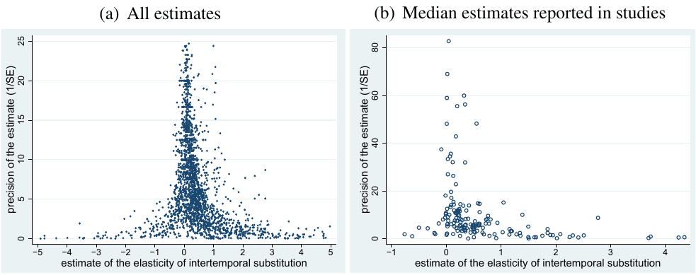
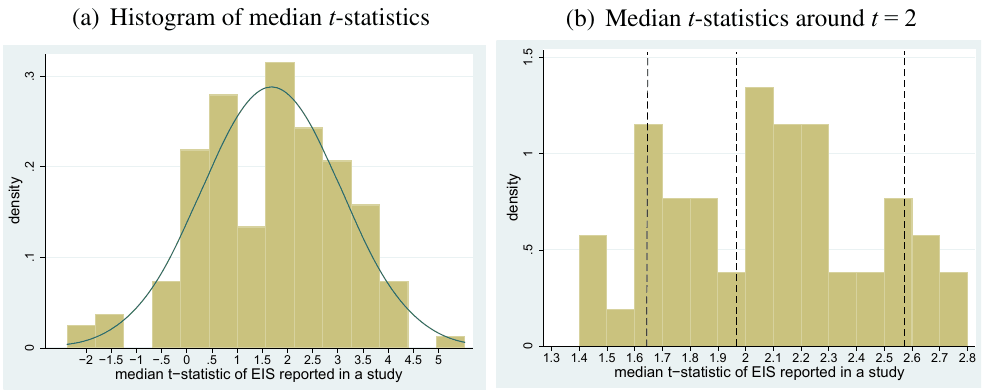

Measuring Intertemporal Substitution: The Importance of Method Choices and Selective Reporting
Tomas Havranek (2015), "Measuring Intertemporal Substitution: The Importance of Method Choices and Selective Reporting." Journal of the European Economic Association 13(6), 1180-1204. https://doi.org/10.1111/jeea.12133.
Tomáš Havránek
Czech National Bank
and Charles University, Prague
The editor in charge of this paper was Fabio Canova.
Acknowledgments: I thank Christopher Baum, Fabio Canova, Roman Horvath, Zuzana Irsova, Marek Rusnak, Jiri Schwarz, Anna Sokolova, Tom Stanley, Diana Zigraiova, three anonymous referees, and seminar participants at CERGE-EI, Charles University, and Czech National Bank for their helpful comments. I acknowledge support from the Czech Science Foundation (grants #15-02411S and #P402/11/0948) and the Grant Agency of Charles University (grant #554213). An Online Appendix with data, code, and additional results is available at meta-analysis.cz/eis. An earlier version of this paper circulated under the title “Publication Bias in Measuring Intertemporal Substitution”. The views expressed here are mine and not necessarily those of the Czech National Bank.
E-mail: tomas.havranek@ies-prague.org
Abstract
I examine 2,735 estimates of the elasticity of intertemporal substitution in consumption (EIS) reported in 169 published studies. The literature shows strong selective reporting: researchers discard negative and insignificant estimates too often, which pulls the mean estimate up by about 0.5. The reporting bias dwarfs the effects of methods, with the exception of the choice between micro and macro data. When I correct the mean for the bias, for macro estimates I get zero, even though the reported -statistics are on average two. The corrected mean of micro estimates of the EIS for asset holders is around 0.3–0.4. Calibrations greater than 0.8 are inconsistent with the bulk of the empirical evidence. (JEL: E21, C83)
1. Introduction
The elasticity of intertemporal substitution in consumption, a key input into macroeconomic models, has been estimated by hundreds of researchers. Their estimates vary greatly, and it is unclear what values should be used for calibration. One of the first surveys on the micro evidence from consumption Euler equations, Browning and Lusardi (1996), puts it in the following way:
It is frustrating in the extreme that we have very little idea of what gives rise to the different findings. (...) We still await a study which traces all of the sources of differences in conclusions to sample period; sample selection; functional form; variable definition; demographic controls; econometric technique; stochastic specification; instrument definition; etc. (p. 1833)
I explore whether the variation in the estimates of the EIS can be attributed to method choices and selective reporting. My results suggest that the findings of the literature are, on average, biased upwards because of the tendency of some authors to preferentially report positive and statistically significant estimates. The bias stemming from selective reporting is stronger than the biases associated with the supposed misspecifications in the measurement of the elasticity.
The first issue I focus on, selective reporting, reflects researchers’ priors concerning the correct value of the parameter and, in many cases, can be beneficial at the level of individual studies. Suppose, for example, that a researcher estimates a negative elasticity of intertemporal substitution. A negative EIS implies convex utility, so the estimate is probably a statistical artifact. One should get negative estimates from time to time when the underlying EIS is small or estimation is imprecise, yet it makes little sense to build conclusions on them. The problem is that no upper limit exists which would mirror the lower limit of zero given by the theory: if many researchers discard negative estimates but most report large positive ones, our inference from the literature as a whole gets biased.
The second issue I explore is the influence of method choices on results. To this end, for each estimate of the EIS I collect information on the definition of the utility function used by the authors, characteristics of the data, definition of variables, inclusion of controls, and estimation technique, and regress the reported elasticities on these characteristics of methodology. I also control for differences in publication characteristics, such as the number of citations and the journal impact factor. Then I compare the extent of the bias stemming from various supposed misspecifications in the measurement of the EIS discussed in the literature with the extent of the bias attributable to selective reporting.
To measure the selective reporting bias I exploit the property of most techniques used by researchers to estimate the EIS: the ratio of the point estimate to its standard error has a -distribution. This property implies that the reported estimates should not be correlated with their standard errors. But when I regress the estimates on their standard errors I get a coefficient of about two—even if I control for 30 variables reflecting the context in which researchers obtain the estimates. The finding indicates that the reported -statistic tends to equal two no matter how large the underlying elasticity is, reflecting the authors’ preference to report positive and statistically significant estimates. The constant in this regression is zero, which suggests that the mean underlying elasticity beyond the bias is negligible. Therefore, the mean EIS reported in the literature, 0.5, equals the selective reporting bias.
The reporting bias seems to dwarf the effects of the supposed misspecifications, with the exception of the choice between micro and macro data and between asset holders and all consumers. The micro studies report a positive elasticity even after correction for selective reporting: on average about 0.2. The corrected mean estimate reaches 0.3–0.4 for estimates associated with asset holders, which I consider the literature’s best shot for the calibration of the EIS. Vissing-Jorgensen (2002) argues that including non-asset holders creates a downward bias in the estimated elasticity, because the corresponding Euler equation is not valid for households that do not participate in asset markets. My results suggest that the empirical literature on the EIS does not support calibrations greater than 0.8, the largest upper bound I get for the asset holders’ elasticity.
2. Data
I search in Google Scholar for studies that estimate the EIS using consumption Euler equations. My search query is available in the Online Appendix along with all data and the list of studies examined after the search. A total of 169 published papers report an estimate of the EIS and its standard error or a statistic from which the standard error can be computed. I collect all estimates from the papers and also codify 30 variables reflecting the context in which researchers obtain the elasticities (Table A.2 in the Appendix). I add the last study to the data set on January 1, 2013, and terminate the search. The oldest study was published in 1981, and the ten most recent ones in 2012. The 169 studies combined provide 2,735 estimates, which makes this paper, to my knowledge, the largest meta-analysis conducted in economics. Doucouliagos and Stanley (2013) survey 87 economic meta-analyses and report that the largest one includes 1,460 estimates from 124 studies.
Many unpublished papers provide estimates of the EIS as well, but I focus on published studies. I have three reasons for this restriction. First, publication status is a simple indicator of quality. Second, it would take many months to collect all information from the unpublished studies. Third, there is evidence for little differences in the extent of selective reporting between published and unpublished studies in economics (for example, Rusnak et al. 2013). Nevertheless, as a robustness check, in the next section I also include a small sample of unpublished studies. I additionally collect estimates of the coefficient of relative risk aversion if the coefficient also determines the EIS—if researchers assume time-separable utility, the same parameter determines both risk aversion and the inverse of the EIS. In this case I approximate the standard error of the EIS by the delta method.
The mean reported estimate from all studies is 0.5. For the computation I exclude estimates that are larger than 10 in absolute value because they would influence the unweighted average heavily. (Later in the analysis I use precision as the weight, and these large estimates are usually imprecise, so I leave them in the data set.) The mean estimate reported in the literature thus corresponds to the common calibration value referred to, for example, by Trabandt and Uhlig (2011), Jeanne and Ranciere (2011), Jin (2012), and Rudebusch and Swanson (2012).1 But the arithmetic mean is driven by studies reporting many estimates. As a next step I select the median estimate from each study: the mean of medians is even larger than the mean of all estimates and reaches 0.7. For micro studies (42 out of the 169 studies in the data set) I get a mean EIS of 0.8. The data set also includes 33 studies published in the top five general interest journals; these studies report the EIS to be 0.9 on average.
If I stopped here I would argue that the empirical evidence of the last three decades, when more weight is given to micro studies and the best journals, is consistent with calibration of the EIS close to one. Logarithmic utility would seem to be a good approximation of the isoelastic utility function. This conclusion could be a mistake, though, since not all estimates have the same probability of being reported. If researchers intentionally or unintentionally suppress negative or insignificant estimates, the mean reported elasticity gets biased upwards.
3. Selective Reporting
The workhorse tool for the estimation of the EIS is the log-linearized consumption Euler equation. Researchers typically follow Hall (1988) and estimate
where stands for consumption growth at time , with the real return on an asset at time (for example the treasury bill return or stock market return), and the error term. Because the error term is correlated with , researchers use instruments for , usually including the rate of return and consumption growth known at time . (The many modifications and alternatives to (1) are discussed and controlled for in the next section.) If is the same across all studies, estimates of , typically obtained using two-stage least squares (TSLS) or the general method of moments (GMM), will be -distributed. More importantly, the ratio of the estimate of to its standard error has a -distribution.
The -distribution of the ratio implies that the numerator (the point estimate of the EIS) should be independent of the denominator (the standard error of the estimate). In the absence of selective reporting the reported estimates are therefore uncorrelated with their standard errors (Card and Krueger, 1995):
where and are the th estimates of the elasticity of intertemporal substitution and their standard errors reported in the th studies; is a disturbance term reflecting sampling error. The coefficient should be zero if all estimates have the same probability of being reported.
Researchers in medicine, among others, have long been concerned with selective reporting. The best medical journals now require registration of clinical trials before publication of results (Stanley, 2005). Similarly the American Economic Association has agreed to establish a registry for randomized control trials “to counter publication bias” (Siegfried, 2012, p. 648), with the eventual intention to make registration necessary for submission to the Association’s journals.2 It appears infeasible to impose this requirement in other fields of empirical economics, although there is little reason to believe they are free of the bias. Selective reporting in various fields has been mentioned by, for example, DeLong and Lang (1992), Card and Krueger (1995), Görg and Strobl (2001), Ashenfelter and Greenstone (2004), and Havranek and Irsova (2012). When registries of empirical research are missing, meta-analysis represents the only way to correct for the bias.
Selective reporting has two potential sources. First, researchers may discard negative estimates, which are inconsistent with the theory since they imply a convex utility function. In this case I would obtain a positive estimate of because of the heteroskedasticity of equation (2): with low standard errors the estimates lie close to the mean underlying elasticity. As the standard errors increase, the estimates get more dispersed, and some get large. If researchers discard the negative estimates but keep the large positive ones, a positive correlation between and arises. Second, researchers (or editors or referees) may prefer statistically significant estimates. In that case researchers need large estimates of the EIS to offset the standard errors, and again I obtain a positive estimate of . If the underlying elasticity is zero but researchers desire a positive estimate significant at the 5% level, they need -statistics of about two, so the estimated will be close to two.
The constant in regression (2), , denotes the underlying elasticity corrected for selective reporting: the mean EIS conditional on standard errors approaching zero. The constant (corrected EIS) can also be computed approximately as the mean uncorrected EIS less the mean extent of publication bias, . I have noted that (2) is heteroskedastic, and the degree of heteroskedasticity is determined by the estimates’ standard errors. To achieve efficiency I use weighted least squares with the inverse of the standard error, the estimates’ precision, as the weight (Stanley, 2008). In all regressions that include multiple estimates from one study I cluster standard errors at the study level. I prefer to estimate the equation with study fixed effects to remove the influence of the studies’ characteristics.3
The first column of Table 1 reports the baseline result. The estimated is approximately two and the constant equals zero, suggesting strong selective reporting and zero underlying elasticity on average. Because 80% of the reported estimates are positive, as much as 1,641 (60% of 2,735) negative estimates may be missing in the literature because of selective reporting. This result suggests that researchers report only a quarter of all negative estimates. Moreover, half of the positive estimates have a -statistic above two, which would indicate that researchers discard 90% of estimates if we accepted that the underlying elasticity was zero for all studies.
| FE | BE | Median | Micro | Top | Country | |
|---|---|---|---|---|---|---|
| SE | 2.115*** | 3.020*** | 2.719*** | 1.496** | 1.466* | 2.117*** |
| (0.205) | (0.573) | (0.397) | (0.717) | (0.825) | (0.216) | |
| Constant | 0.0145 | 0.0303*** | 0.0322*** | 0.174*** | 0.171* | 0.0144 |
| (0.00881) | (0.00656) | (0.00893) | (0.0554) | (0.0887) | (0.00928) | |
| Observations | 2,735 | 2,735 | 2,735 | 512 | 566 | 2,735 |
| Studies | 169 | 169 | 169 | 42 | 33 | 169 |
Notes: The table presents the results of regression . and are the th estimates of the elasticity of intertemporal substitution and their standard errors reported in the th studies. Estimated by weighted least squares with the inverse of the reported estimate’s standard error taken as the weight. Standard errors of regression parameters are robust, clustered at the study level, and shown in parentheses. FE: study fixed effects; BE: between effects; Median: only median estimates of the EIS reported in the studies are included; Micro: only micro estimates of the EIS are included; Top: only estimates of the EIS from the top five journals are included; Country: country and study fixed effects. *Significant at 10%; **significant at 5%; ***significant at 1%.
In the second and third column of the table I use the average and median values reported in the studies. The evidence for selective reporting gets stronger when between-study instead of within-study variation is used. The estimated magnitude of the bias increases to 2.7–3.0, and both regressions identify a significant but small underlying EIS of about 0.03. The bias seems to be smaller in micro studies and studies published in the top five journals, but not by much—by approximately 25% compared to all studies. Moreover, micro studies and studies published in top journals show a positive EIS, about 0.2, even after correction for selective reporting. Because it is easier for micro studies to identify a positive EIS, researchers do not have to search long for an intuitive result, which leads to less selective reporting. Studies published in top journals use micro data more often than other studies, which also leads to a smaller bias. In the last column of the table I add country fixed effects to the baseline specification, because the estimates cover 120 different countries (although more than half of all the estimates use data on the United States).4 The result is similar to the case when I employ only study fixed effects: the magnitude of the reporting bias is large and the mean EIS corrected for the bias is negligible.
To compare the extent of selective reporting between published and unpublished studies, I collect data from 50 working papers. I use the same search strategy as for the published studies, but only include working papers whose latest version was detected by Google Scholar in 2007 or earlier; that is, at least five years prior to the end of my search period for published studies. I exclude newer working papers because, due to publication lags in economics, many of them may still be published. The results are provided in the Online Appendix. Unpublished studies show less selective reporting, but the difference is statistically insignificant. Overall, my results suggest that selective reporting arises primarily from the researchers’ priors about what constitutes a plausible and interesting result, not from the preferences of editors and referees—although the priors may be formed based on what results are publishable.

The Online Appendix shows four additional robustness checks. First, I test whether my results change if I only consider estimates of the EIS published in finance journals. Different values of the elasticity are needed to explain different facts in economics and finance; perhaps the two streams of literature differ in the extent of selective reporting. Nevertheless, my results suggest that the estimates of the EIS reported in finance are very similar to those reported in economics. Second, some studies report asymmetric confidence intervals for the estimates, which means that the ratio of the point estimate to the standard error is not -distributed. I follow the advice of Stanley (2001, p. 135) to “better err on the side of inclusion” in meta-analysis, compute approximate standard errors for the estimates (based on the simplifying assumption of normal distribution), and include the estimates. Exclusion of these estimates does not change my results. Third, I exclude the three studies from my sample that use the long-run risks model to estimate the EIS, but the results are again similar. Finally, my results do not change qualitatively if I exclude estimates with bootstrapped confidence intervals.
It is difficult to say at this point which of the two potential sources of selective reporting drives the results in Table 1. A graphical inspection of the data suggests that both sources play a role. Figure 1 shows the so-called funnel plot, which is often used in medical meta-analyses to detect selective reporting (Egger et al. 1997). The horizontal axis measures the magnitude of the estimate of the EIS, while the vertical axis measures the estimate’s precision, the inverse of the standard error. The most precise estimates should be concentrated close to the underlying effect at the top of the figure, while the imprecise estimates at the bottom should be more dispersed. The -distribution of the ratio of point estimates to their standard errors ensures that in the absence of selective reporting the figure is symmetrical, forming an inverted funnel.
Panel (a) of Figure 1 shows the funnel plot with all estimates of the EIS. The most precise estimates are positive but small. Researchers report negative estimates less often than positive estimates with the same precision, which makes the arithmetic average of the reported estimates much larger than the precision-weighted average. It is easier to see the pattern of selective reporting in panel (b) of Figure 1, where I show only the median estimates reported in the studies. In fact, equation (2) estimated in Table 1 can be interpreted as a test of the funnel's asymmetry. The weighted least squares version of equation (2) follows from rotating the axes of the funnel plot and dividing the values on the new vertical axis by the standard error to remove heteroskedasticity.

Fugure 2 shows the consequences of the second source of selective reporting: selection of estimates for statistical significance. The figure depicts the distribution of the median t-statistics of the estimates reported in the studies. I use median values here because some studies report many estimates with similar t-statistics, which would distort the histogram. (A histogram using all estimates is available in the Online Appendix, where I also report some statistical tests.) From panel (a) we can see that estimates marginally insignificant at the 5% level are reported less often than they should be. Panel (b) offers a closer look at the distribution of the t-statistics around two. When the t-statistics reach the critical value corresponding to statistical significance at the 10%, 5%, and 1% level, estimates seem to be reported more frequently. The frequency of reported elasticities more than doubles when a conventional critical value is reached, and decreases sharply just before the t-statistic reaches the next critical value. Together with the regression results reported in Table 1, Figure 2 presents strong evidence that researchers prefer to report statistically significant estimates of the EIS.
Hedges (1992) introduces a model of the second source of selective reporting. He assumes that the probability of reporting of an estimate is determined by its statistical significance and only changes when the t-statistic reaches a psychological barrier. I prefer the funnel asymmetry test, because it is more flexible and captures both sources of selective reporting. Nevertheless, I estimate Hedges' model and report the results in the Online Appendix. The results of Hedges' model also suggest substantial selective reporting in the literature.
4. Method Choices
So far I have assumed that all differences in the estimates are due to sampling error and selective reporting. But in reality the estimates come from studies that use various data sets and methods, which may themselves lead to systematically different results. To explain the differences in the results I collect 30 variables reflecting the utility function used in the study, characteristics of the data, design of the analysis, definition of variables, estimation characteristics, and publication characteristics. I add these variables, described in Table A.2 in the Appendix, to regression (2), which yields
where is a vector of the 30 characteristics of the estimates. The constant in the regression still denotes the underlying EIS corrected for reporting bias, but now the constant must be interpreted together with . In this specification the constant represents the underlying EIS conditional on . The following paragraphs describe why different method choices could influence the reported elasticities.
Utility Function.
I create a dummy variable that equals one if the researcher assumes Epstein–Zin preferences and separates the EIS from the coefficient of relative risk aversion. Some studies assume Epstein–Zin preferences but use a log-linear approximation of the Euler equation, which leads to the same estimation model as with time-separable utility; for these estimates I set the dummy variable to zero. With time-separable utility the curvature of the utility kernel carries information about both risk aversion and intertemporal substitution. Hall (1988) argues that the interpretation of the estimated parameter as describing intertemporal substitution is natural, while Kocherlakota (1990) suggests that the parameter captures risk aversion and says little about intertemporal substitution. If risk aversion drives the estimate of the curvature parameter, our inference concerning the EIS estimated within the framework of time-separable utility will be biased. The direction of the bias depends on whether the true EIS is smaller or larger than the inverse of the coefficient of relative risk aversion.
Some authors assume habits in consumption; in their estimations they usually include lagged values of consumption in the log-linearized Euler equation (as in Dynan 2000). If habit formation is significant, the estimated coefficients on the rate of return will be systematically smaller than the coefficients obtained without habit formation. Dynan (2000), however, finds little evidence for habit formation and even reports a negative coefficient for lagged consumption, which contributes to larger estimates of the coefficient on the rate of return.
Ogaki and Reinhart (1998) show that assuming separability between durable and nondurable consumption goods can produce a downward bias in the estimates of the EIS. An increase in the interest rate increases this year's user cost for the service flow from purchasing durable goods, so the consumer substitutes away to nondurables. If the change in the user cost is not compensated next year, the growth rate of the consumption of nondurables decreases, leading to smaller estimates of the EIS. Authors allowing for nonseparability between durables and nondurables use cointegration estimation methods.
Amano and Wirjanto (1997) find that intratemporal substitution between private and public consumption is important, so that the typical assumption of separability between these two types of consumption is restrictive. They also argue that their cointegration technique is more flexible than the usual GMM approach, as it does not require the assumption of, for example, the absence of liquidity constraints and constant preference shocks. Amano and Wirjanto note that their method produces smaller estimates of the EIS compared to GMM. Similarly, Ostry and Reinhart (1992) argue that it is important to distinguish between tradable and nontradable consumption goods. They report larger estimates of the EIS than what is typically found in the literature.
Data Characteristics.
I include the logarithm of the number of cross-sectional units (households, cohorts, or countries) used in the estimation of the EIS to see whether the breadth of the data has an influence on the results. It is natural to put more confidence in large studies, which should display little small-sample bias. In a similar vein I control for the number of years of the data used in the estimation, because Attanasio and Low (2004) show that log-linearized Euler equations only give consistent estimates when the available time span of the data is long. I also allow the EIS to vary in time by controlling for the average year of the data period used in the estimation. Perhaps financial innovations lessen the constraints that hinder intertemporal substitution; changes in disposable income and stock market participation can also affect the estimated elasticity.
Attanasio and Weber (1993) note that estimating Euler equations on macro data can lead to a downward bias in the estimated EIS because of, for example, the omission of demographic factors. A growing proportion of studies have used micro data to estimate the elasticity, and I control for this aspect of methodology to see what the systematic effect of micro estimation is on the reported elasticity.
Bansal et al. (2012) stress the difference between consumers' decision frequency and the econometrician's sampling frequency of the data. They estimate the decision frequency to be approximately monthly and show that estimating the EIS with a lower sampling frequency without taking into account temporal aggregation leads to a substantial downward bias. I include dummy variables for annual and monthly sampling frequencies used to estimate the EIS, with the most common quarterly frequency as the base.
Design of the Analysis.
I distinguish between two groups of micro studies estimating the EIS. The first, larger group uses household-level data on consumption, usually from the Panel Study of Income Dynamics. The second group constructs panels of birth cohorts to estimate the elasticity (for example, Blundell et al. 1994; Attanasio and Browning 1995). Gruber (2006) notes that in the latter group of studies the identification of the elasticity comes from time series variation correlated with consumption, which may lead to a downward bias. Similarly, according to Lawrance (1991), the first group of micro studies should include time dummies for the identification to come from cross-sectional variation.
There is little consensus in the literature on the natural normalization of consumers' first-order condition for optimal portfolio choice. Some authors follow Hall (1988), regress consumption growth on the rate of return, and interpret the resulting coefficient as the EIS. Others follow the normalization of Hansen and Singleton (1982), regress the rate of return on consumption growth, and interpret the resulting coefficient as the inverse of the EIS (or, with time-separable utility, the coefficient of relative risk aversion). Both practices are asymptotically equivalent, but Yogo (2004) shows that they lead to different results due to the small-sample bias stemming from the use of weak instruments. In practice, the choice of normalization depends on whether consumption growth or the rate of return is more difficult to predict. Campbell (1999) argues that the normalization of Hall (1988) may help with the weak instrument problem because good instruments for consumption growth are harder to find. Beeler and Campbell (2012) note that since a large EIS is consistent with more predictable consumption growth, the normalization of Hansen and Singleton (1982) is more suitable when the underlying EIS is large, while when the EIS is small the normalization of Hall (1988) is preferred.
Some studies estimate the EIS separately for rich households or asset holders. Poor consumers may substitute less intertemporally because their consumption bundle contains a larger share of necessities, which are more difficult to substitute between time periods. Evidence for a larger EIS among the rich is reported by Attanasio and Browning (1995) using micro data and Ogaki et al. (1996) using cross-country data. Exposure to the stock market may also be correlated with households' awareness of the benefits of intertemporal substitution; Mankiw and Zeldes (1991) find a larger EIS for stockholders than for nonstockholders. I include a dummy that equals one if the estimate is related to the rich or asset holders.
Hall (1988) illustrates why first lags of variables should not be used as instruments because of the time aggregation of consumption. He argues that time aggregation makes the instruments used by Hansen and Singleton (1982) correlated with the error terms in the estimated Euler equation, which may explain why Hansen and Singleton (1982) and other studies following their approach find much larger estimates of the EIS compared with Hall (1988).
A number of studies focus on excess sensitivity of consumption to anticipated income; in most cases they include a measure of income in the log-linearized Euler equation using the normalization of Hall (1988). If there is some excess sensitivity, the estimated regression coefficient on the rate of return should be smaller than in the case of no excess sensitivity, so I expect a negative sign for the regression coefficient of the dummy variable corresponding to this aspect of methodology. Moreover, I account for the number of controls for taste shifters (such as age, family size, education, and marital status) used in micro studies estimating the EIS.
Variable Definition.
Most studies use nondurable consumption as a proxy for total consumption; durable goods are usually excluded because of the volatility of spending on durables and the problems with imputing a service flow to the stock of durables. I create a dummy variable that equals one for studies that include durables in the consumption proxy. For example, Mankiw (1985) estimates a larger EIS for the consumption of durable goods than for nondurable consumption. Some studies use food expenditure as the consumption proxy, a practice criticized by Attanasio and Weber (1995) on the grounds of nonseparability between food and other consumption. Food is a necessity, and intertemporal substitution of other components of consumption is probably easier, which leads to a downward bias in the EIS when researchers rely on food as a proxy for consumption.
The typical proxy for the rate of return used in the consumption Euler equation is the return on treasury bills. Some studies use stock returns, but these are more difficult to predict, which magnifies the weak instrument problem and may lead to a downward bias in the estimated EIS, as mentioned by Vissing-Jorgensen (2002). Mulligan (2002) argues that the rate of return should be measured as the expected return on a representative unit of capital. Few researchers follow his approach, but I include a dummy that equals one if the researcher uses more than one measure of the rate of return to estimate the EIS.
Estimation Characteristics.
I distinguish between studies that estimate the exact Euler equation and studies that use log-linear approximation. Carroll (2001) is skeptical about the use of log-linearized consumption Euler equations for the estimation of the EIS, because higher-order terms may be endogenous to omitted variables. In contrast, Attanasio and Low (2004) argue that the log-linear Euler equation performs better than non-linear GMM.
Most studies use GMM to estimate the Euler equation. Sometimes TSLS is used, which, in contrast to GMM, requires the assumption of homoskedastic error. A few researchers use methods based on maximum likelihood, especially limited information maximum likelihood. Yogo (2004) notes that the latter technique could be more reliable in the case of weak instruments. Several authors assume away the simultaneity problem and use OLS to estimate the log-linearized Euler equation. Neely et al. (2001) suggest that, because the weak instrument problem is so difficult to overcome, this simplification can lead to more stable and sensible estimates of the EIS.
Publication Characteristics.
While I try to control for as many aspects of methodology as possible, some important advances in methodology cannot be examined in this framework because they have been employed by only a few studies—the corresponding dummy variable in my analysis would have little variation. For example, Bansal and Yaron (2004) argue that time-varying consumption volatility should be taken into account, as ignoring it leads to a downward bias in the estimates of the EIS. (On the other hand, Beeler and Campbell, 2012, question the extent of the bias.) To see whether new methods not captured by the previously explained variables have a systematic influence on the estimated EIS, I include the study publication year in the analysis. As an additional control for study quality I include the logarithm of the number of Google Scholar citations per year, the recursive RePEc impact factor of the journal, and a dummy variable that equals one for studies published in the top five general interest journals.
My intention is to find out what aspects of methodology have a systematic influence on the estimated EIS and whether the estimated coefficient for reporting bias survives the addition of variables reflecting heterogeneity. Moreover, I would like to estimate the corrected EIS reported in micro studies, and especially for asset holders, while controlling for method characteristics. Vissing-Jorgensen (2002) argues that the EIS of asset holders represents the underlying elasticity better than does the mean over all households. Guvenen (2006) shows that the dilemma between the large EIS required by most macro models and small empirical estimates can arise when the elasticity differs across groups of people: the rich (or asset holders) have a higher EIS than the rest of the population. The EIS of the asset holders determines fluctuations in investment and output, which makes the estimate more suitable for calibration—at least if the model focuses on inference concerning aggregates linked to wealth.
Table 2 presents the results of regression (3). Some method variables have the same value for all estimates reported in a study, so I do not use fixed effects as I need both between- and within-study variation. I use sampling weights equal to the inverse of the number of estimates reported in a study to take into account that some studies report many more estimates than others. The first column of the table includes only dummy variables for micro data and asset holders additionally to the standard error. As expected, micro studies and studies focusing on the rich and asset holders report substantially larger elasticities. The estimation yields a large coefficient for reporting bias (2.5) and a negligible EIS beyond the bias for macro studies (the constant at the bottom of the table; 0.02), which is consistent with the results reported in the last section. The corrected elasticity for micro studies is 0.22, and for micro estimates related to asset holders the elasticity reaches 0.36 (= 0.0237 + 0.200 + 0.136) with a narrow 95% confidence interval [0.33, 0.39].
In the next columns of Table 2, I add groups of variables reflecting different aspects of the studies and estimates discussed in the previous paragraphs. The estimated magnitude of the reporting bias decreases from 2.5, but oscillates around two in all specifications and retains statistical significance at the 1% level. The difference between micro and macro studies and between estimates for asset holders and average consumers increases with the addition of more variables reflecting method choices. Some of the method choices seem to systematically influence the reported elasticities.
| (1) | (2) | (3) | (4) | (5) | (6) | (7) | |
|---|---|---|---|---|---|---|---|
| SE | 2.465*** | 1.926*** | 1.864*** | 2.109*** | 1.975*** | 1.961*** | 1.809*** |
| (0.394) | (0.251) | (0.243) | (0.268) | (0.261) | (0.262) | (0.248) | |
| Micro data | 0.200*** | 0.209*** | 0.269*** | 0.350*** | 0.476*** | 0.502*** | 0.430*** |
| (0.0250) | (0.0308) | (0.0495) | (0.0986) | (0.0854) | (0.0865) | (0.106) | |
| Asset holders | 0.136*** | 0.174*** | 0.195*** | 0.189*** | 0.228*** | 0.236*** | 0.316*** |
| (0.0303) | (0.0365) | (0.0626) | (0.0565) | (0.0482) | (0.0460) | (0.0586) | |
| Utility | |||||||
| Epstein–Zin | −0.0200*** | −0.0261*** | −0.0207*** | −0.0257*** | −0.0245*** | −0.0754* | |
| (0.00655) | (0.00699) | (0.00738) | (0.00742) | (0.00623) | (0.0384) | ||
| Habits | 0.425*** | 0.398*** | 0.409*** | 0.292*** | 0.328*** | 0.304*** | |
| (0.0671) | (0.0710) | (0.0362) | (0.0487) | (0.0443) | (0.0472) | ||
| Nonsep. durables | 0.0320*** | 0.0123 | 0.0309* | 0.0261* | 0.0265 | 0.0367* | |
| (0.00324) | (0.0122) | (0.0163) | (0.0156) | (0.0160) | (0.0190) | ||
| Nonsep. public | 0.0709 | 0.109 | 0.117 | 0.0399 | 0.0560 | 0.0959 | |
| (0.0871) | (0.0952) | (0.0916) | (0.0964) | (0.0881) | (0.0921) | ||
| Nonsep. tradables | 0.358*** | 0.328*** | 0.316*** | 0.187*** | 0.195*** | 0.212*** | |
| (0.0456) | (0.0512) | (0.0644) | (0.0593) | (0.0679) | (0.0668) | ||
| Data | |||||||
| No. of households | −0.0114 | −0.0254 | −0.0447*** | −0.0504*** | −0.0595*** | ||
| (0.0101) | (0.0163) | (0.0142) | (0.0138) | (0.0171) | |||
| No. of years | 0.00729 | 0.00317 | 0.000970 | 0.000292 | −0.00926 | ||
| (0.00822) | (0.00639) | (0.00528) | (0.00477) | (0.0114) | |||
| Average year | 3.626 | 4.955* | 3.470 | 4.286 | 6.391* | ||
| (2.823) | (2.895) | (2.430) | (2.958) | (3.568) | |||
| Annual data | −0.0260 | −0.0149 | −0.0207 | −0.0237 | −0.0142 | ||
| (0.0195) | (0.0149) | (0.0143) | (0.0149) | (0.0174) | |||
| Monthly data | −0.00511 | −0.0251 | 0.00324 | −0.0284 | −0.0368 | ||
| (0.0107) | (0.0224) | (0.0188) | (0.0521) | (0.0538) | |||
| Design | |||||||
| Quasipanel | −0.0932* | −0.165*** | −0.123*** | −0.0886* | |||
| (0.0554) | (0.0442) | (0.0403) | (0.0490) | ||||
| Inverse estimation | 0.0392 | 0.0397 | 0.0513* | 0.0225 | |||
| (0.0240) | (0.0275) | (0.0294) | (0.0429) | ||||
| First lag instrument | −0.00893 | 0.0133 | 0.0111 | 0.0415 | |||
| (0.0218) | (0.0204) | (0.0307) | (0.0274) | ||||
| No year dummies | −0.458*** | −0.237 | −0.240 | −0.222 | |||
| (0.161) | (0.219) | (0.210) | (0.218) | ||||
| Income | −0.0218 | −0.0315** | −0.0328 | −0.0350 | |||
| (0.0172) | (0.0127) | (0.0201) | (0.0230) | ||||
| Taste shifters | 0.0649** | 0.0423** | 0.0375* | 0.0712** | |||
| (0.0251) | (0.0203) | (0.0207) | (0.0310) | ||||
| Variable definition | |||||||
| Total consumption | 0.102*** | 0.114*** | 0.0888*** | ||||
| (0.0242) | (0.0292) | (0.0337) | |||||
| Food | −0.120 | −0.0827 | −0.0689 | ||||
| (0.187) | (0.181) | (0.193) | |||||
| Stock return | −0.00760 | −0.00659 | −0.00444 | ||||
| (0.0126) | (0.0112) | (0.00960) | |||||
| Capital return | −0.0431 | −0.0476 | −0.0472 | ||||
| (0.0327) | (0.0385) | (0.0411) | |||||
| Estimation | |||||||
| Exact Euler | 0.0606 | 0.0477 | |||||
| (0.0384) | (0.0345) | ||||||
| ML | 0.0874 | 0.130 | |||||
| (0.0770) | (0.0830) | ||||||
| TSLS | 0.0641 | 0.0284 | |||||
| (0.0459) | (0.0553) | ||||||
| OLS | 0.102 | 0.0887 | |||||
| (0.0665) | (0.0710) |
| (1) | (2) | (3) | (4) | (5) | (6) | (7) | |
|---|---|---|---|---|---|---|---|
| Publication | |||||||
| Publication year | −0.609 | ||||||
| (6.062) | |||||||
| Citations | 0.0255* | ||||||
| (0.0150) | |||||||
| Top journal | 0.0945 | ||||||
| (0.0765) | |||||||
| Impact | −0.0185 | ||||||
| (0.0272) | |||||||
| Constant | 0.0237** | 0.00512 | −27.52 | −37.61* | −26.33 | −32.58 | −43.89 |
| (0.0109) | (0.00322) | (21.42) | (21.97) | (18.44) | (22.45) | (43.05) | |
| Observations | 2,735 | 2,735 | 2,735 | 2,735 | 2,735 | 2,735 | 2,735 |
| Studies | 169 | 169 | 169 | 169 | 169 | 169 | 169 |
Notes: The tables presents the results of regression . and are the th estimates of the elasticity of intertemporal substitution and their standard errors reported in the th studies. is a vector of the estimates' characteristics described in Table A.2. Estimated using sampling weights equal to the inverse of the number of estimates reported in the th studies. Standard errors are robust, clustered at the study level, and shown in parentheses. *Significant at 10%; **significant at 5%; ***significant at 1%.
Utility Function.
When researchers assume Epstein–Zin utility and disentangle the EIS from the coefficient of relative risk aversion, they tend to find systematically smaller estimates of the elasticity, but only by 0.02–0.03 on average. Therefore, my results do not show a substantial bias in the estimated EIS due to the use of time-separable utility. In contrast, when habits in consumption are assumed, the reported EIS are likely to be much larger than without habits: by 0.3–0.4. I have noted that the reported coefficients should decrease as the strength of habit formation increases, so the result probably reflects the fact that many studies find an insignificant (or even negative) coefficient on lagged consumption; for example, Dynan (2000). Moreover, only a few studies that estimate the EIS assume habits.
Not allowing for nonseparability between durables and nondurables creates a downward bias in the estimates of the EIS, consistent with the argument of Ogaki and Reinhart (1998), but the bias is only 0.02–0.03 and the regression coefficient corresponding to this dummy variable is statistically insignificant in some specifications. It does not seem to matter for the estimates of the EIS whether separability between private and public consumption is assumed. On the other hand, not allowing for nonseparability between tradable and nontradable consumption goods leads to a substantial downward bias of 0.2–0.3, which corroborates the results of Ostry and Reinhart (1992).
Data Characteristics.
The results suggest that the characteristics of the data, other than the choice between micro and macro estimation, have little influence on the reported estimates of the EIS. Larger studies seem to be associated with lower estimates, but the corresponding regression coefficient is small and statistically insignificant in some specifications. I do not find a systematic bias in studies that use short time series to estimate the EIS. Studies using newer data are associated with somewhat larger reported elasticities, but the effect is not significant at the 5% level in any specification. Finally, the data sampling frequency matters little for the estimated EIS once I control for the definition of the utility function.
Design of the Analysis.
Studies that construct panels of birth cohorts to estimate the EIS tend to report elasticities about 0.1 smaller than studies using household-level consumption data. In contrast, the choice of the normalization of the Euler equation (that is, whether to regress consumption growth on the rate of return or the other way round) has little effect on the reported EIS. Similarly the use of first lags of variables as instruments does not create a substantial bias. It matters for the micro studies whether or not year fixed effects are included in the estimation: when the identification comes from tax rate variation and not from time series factors, the estimated elasticities tend to be 0.2–0.4 smaller, but the corresponding regression coefficients have large standard errors. The inclusion of income in the Euler equation does not affect the reported EIS much. The inclusion of taste shifters, however, is important: studies that control for more demographic characteristics report larger elasticities.
Variable Definition.
The choice of the proxy for consumption has important consequences for the estimated elasticity. I find that the inclusion of durable goods in the proxy significantly increases the EIS (by about 0.1), which is consistent with the results of Mankiw (1985). The use of food as the proxy for consumption does not lead to a significant bias in the reported EIS. Finally, the choice of the proxy for the rate of return has no systematic consequences for the results.
Estimation Characteristics.
Different estimation techniques do not produce systematically different estimates of the elasticity. OLS, GMM, TSLS, and maximum likelihood-based methods all yield similar results on average when I control for other aspects of methodology. Studies estimating exact and log-linearized Euler equations also report similar elasticities.
Publication Characteristics.
After I control for all the method choices discussed previously, I also include several publication characteristics. Other things being equal, newer studies do not generate substantially different estimates of the EIS. This result suggests that my proxies for method choices capture any systematic differences in the reported EIS that are correlated with the year of publication. The additional proxies for study quality (the number of citations, publication in a top journal, and the recursive impact factor of the journal) do not affect the reported elasticities once I control for method choices.
Now I turn back to estimating the underlying elasticity for asset holders to see what the effect is of the additional method choices taken together. Because of the many variables in columns (2)–(7) it is difficult to discern the underlying elasticity; it depends on the values of all the additional variables. I take the last column of the table and choose a preferred value for each variable to get an estimate conditional on “best practice.” I put quotes around best practice here because the definition is subjective, no study can address all potential problems in the literature simultaneously, and some of my variables do not capture methodology—for example, the number of citations or the journal impact factor. We can also imagine the result as an aggregated EIS with more weight given to the estimates' characteristics that can be considered in some way better than others.
My definition of best practice is the following. I prefer if the first lag of variables is not included among instruments—which is to say I plug in value “0” for the dummy variable First lag instrument in column (7) of Table 2. I prefer if nondurable consumption, not just food, is used as the dependent variable; if micro studies include time dummies; if the model allows for nonseparability between durables and nondurables; if the rate of return is measured as the return on capital; if the researcher uses micro data; if the researcher does not use the log-linear approximation of the Euler equation; if the study employs the normalization of Hall (1988); if the study differentiates between the EIS and the coefficient of relative risk aversion; if the regression is estimated by GMM; and if the study is published in a top journal. I also plug in the maximum number of cross-sectional units used in my sample of studies, the maximum number of years of the data period, the maximum average year of the data, the maximum number of citations of the study, and the maximum impact factor of the outlet. I set all other variables to their sample means.
The resulting estimate of the EIS for asset holders is a linear combination of regression parameters conditional on my definition of best practice. I get a point estimate of 0.33, which is close to the previous estimate unconditional on methodology (0.36). The estimate conditional on best practice, however, has a much wider 95% confidence interval: [−0.2, 0.8]. This estimate of the EIS is corrected for both the reporting bias and potential mistakes in measurement. I would get a different estimate if I chose a different definition of best practice, but in general the supposed misspecifications taken together do not seem to have a systematic effect on the estimated EIS. I believe it is safe to say that calibrations of the EIS greater than 0.8 are inconsistent with the literature estimating the elasticity.
The order in which I add the groups of control variables into Table 2 is arbitrary. I also derive the best-practice estimate from the last column that includes all variables, even though most of them are insignificant: the last column is probably not the best possible model for explaining the heterogeneity in the estimates of the EIS. So, as a robustness check, I employ Bayesian model averaging to address model uncertainty.5 Bayesian model averaging runs many regressions that include the possible subsets of all explanatory variables and constructs a weighted average over these regressions. (The weights are roughly proportional to the goodness of fit of the different regressions.) The results of Bayesian model averaging, available in the Online Appendix, are consistent with those reported here.
| IV | IV | Proxy | Proxy | |
|---|---|---|---|---|
| FE | Pooled | FE | Pooled | |
| SE | 2.433** | 1.802*** | 1.601*** | 1.718*** |
| (0.972) | (0.241) | (0.314) | (0.262) | |
| Constant | 0.000840 | −8.250 | 0.0274*** | 0.00242 |
| (0.0416) | (5.114) | (0.0101) | (0.00338) | |
| Utility definition | Included | Included | ||
| Data characteristics | Included | Included | ||
| Design char. | Included | Included | ||
| Variable def. | Included | Included | ||
| Estimation char. | Included | Included | ||
| Publication char. | Included | Included | ||
| Observations | 2,735 | 2,735 | 2,735 | 2,735 |
| Studies | 169 | 169 | 169 | 169 |
Notes: The table shows modifications of the baseline regression reported in the first column of Table 1: , where and are the th estimates of the elasticity of intertemporal substitution and their standard errors reported in the th studies. IV: the inverse of the square root of the number of observations is used as an instrument for the standard error; Proxy: the inverse of the square root of the number of observations is used as a proxy for the standard error; FE: study fixed effects; Pooled: estimate and study characteristics, described in Table A.2, are included; no fixed effects. See also notes to Table 1 and Table 2. **Significant at 5%; ***significant at 1%.
I have noted, based on the results reported in Table 2, that the inclusion of controls for estimate and study characteristics does not alter the relationship identified between the reported estimates of the EIS and their standard errors—the selective reporting bias. But even though I include 30 control variables, I cannot hope to capture all methodological differences among the estimates. If I fail to control for a method choice that affects the estimates and standard errors in the same direction (and if at the same time the effect is not offset by omitted method choices that have an opposite influence on the estimates and standard errors), my results concerning the relationship between the two variables will be exaggerated. In extreme cases the relationship may be entirely due to unobserved differences in methodology that jointly determine the estimates and standard errors.
To test whether unobserved differences in methodology affect my results, I exploit the fact that the standard error of a regression parameter is proportional to the inverse of the square root of the number of degrees of freedom used in the regression. While I do not have data on the number of degrees of freedom, I have information on a closely related statistic, the number of observations. Therefore the inverse of the square root of the number of observations used by researchers to obtain the EIS represents a natural instrument for the standard error of the estimate. The first column of Table 3 re-estimates my baseline specification for detecting selective reporting, the first column of Table 1, but instruments the variable on the right-hand side. The estimated regression coefficients are similar to those found in the baseline specification, but the estimates are predictably less precise: the standard errors are about four times larger. Even so, the coefficient associated with selective reporting is statistically significant at the 5% level.
I believe it is plausible to assume that the number of observations is little correlated with most method choices, so that it represents a valid instrument. Nevertheless, important data characteristics such as the difference between micro and macro approaches are correlated with the number of observations, so in the second column of Table 3, I take these characteristics out of the error term. The second column of Table 3 therefore re-estimates the last column of Table 2, but again uses the inverse of the square root of the number of observations as an instrument. The resulting coefficient for selective reporting is smaller, but still statistically significant and close to two. I obtain similar results when I use the inverse of the square root of the number of observations as a proxy instead of an instrument for the standard error (the remaining two columns of Table 3). I conclude that the relationship between the estimates of the EIS and their standard errors is not driven by unobserved differences in methodology.
5. Conclusion
Selective reporting creates a bias of about 1/2 in the mean published estimate of the elasticity of intertemporal substitution, which is more than the effect of any method choice. Only the choices between micro and macro data and between asset holders and all households create differences in the estimated EIS of a similar magnitude to the effects of selective reporting. Corrected for the reporting bias, the micro estimates for asset holders are around 1/3, and the number does not change much when I estimate the EIS conditional on many method choices to correct for the supposed mistakes in measurement discussed in the literature.
My results suggest that the published literature estimating the EIS is consistent with the elasticity lying deep below 1, which is in line with Hall (1988) and Campbell (2003), and, among other things, implies that agents' optimal consumption–wealth ratio increases in expected returns (Campbell and Viceira, 1999). Macroeconomic models typically require an EIS close to 1, but Braun and Nakajima (2012) show how a small EIS can be compatible with macroeconomic facts. The major caveat of my results is the impossibility to examine the effects of some recent advances in methodology that have been employed by only a few studies: for example, taking into account stochastic volatility in consumption based on Bansal and Yaron (2004). Nevertheless, the reported estimates do not increase with the year of publication, which suggests that newer methods do not yield substantially larger estimates.
Appendix: Supplementary Tables
| Study | EIS | Comments on the calibration |
|---|---|---|
| House and Shapiro (2006) | 0.2 | p. 1837: “Most empirical evidence indicates that the elasticity of intertemporal substitution is substantially less than one (see Hall 1988). Our calibration is roughly the average estimate in Hall (1988), Campbell and Mankiw (1989), and Barsky et al. (1997).” |
| Piazzesi et al. (2007) | 0.2 | p. 550: “We follow Hall (1988), who estimates [EIS] to be around 0.2. Studies based on micro data find values for that are somewhat higher, but not by much. For example, Runkle (1991) reports an estimate of 0.45 using micro data on food consumption. Attanasio and Browning (1995) report estimates using CEX data between [0.48, 0.67].” |
| Chari et al. (2002) | 0.2 | p. 546: “The literature has a wide range of estimates for the curvature parameter [the inverse of the EIS]. We set to 5 and show later that this value is critical for generating the right volatility in the real exchange rate.” |
| Trabandt and Uhlig (2011) | 0.5 | p. 311: “For the intertemporal elasticity of substitution, a general consensus is followed for it to be close to 0.5.” |
| Jeanne and Ranciere (2011) | 0.5 | p. 920: “The benchmark risk aversion [the inverse of the EIS] and its range of variation are standard in the growth and real business cycle literature.” |
| Jin (2012) | 0.5 | p. 2130: “The intertemporal elasticity of substitution is set to the standard value.” |
| Rudebusch and Swanson (2012) | 0.5 | p. 121: “We set the curvature of household utility with respect to consumption, , to 2, implying an intertemporal elasticity of substitution in consumption of 0.5, which is consistent with estimates in the micro literature (Vissing-Jorgensen 2002).” |
| Smets and Wouters (2007) | 0.67 | p. 593: “These [values for the EIS and other parameters] are all quite standard calibrations.” |
| Bansal and Yaron (2004) | 1.5 | p. 1492: “The magnitude for the EIS that we focus on is 1.5. Hansen and Singleton (1982) and Attanasio and Weber (1989) estimate the EIS to be well in excess of 1.5. More recently, Vissing-Jorgensen (2002) and Guvenen (2006) also argue that the EIS is well over 1.” |
| Ai (2010) | 2 | p. 1357: “Empirical evidence on the magnitude of the EIS parameter is mixed. While Hansen and Singleton (1982), Attanasio and Weber (1989), and Vissing-Jorgensen (2002) estimate the EIS parameter to be larger than one, other studies, for example, Hall (1988), Campbell (1999), and Browning et al. (1999), argue that the EIS parameter is well below one. (...) Bansal et al. (2007) estimate the EIS parameter to be 2.43 with a standard deviation of 1.3.” |
| Study | EIS | Comments on the calibration |
|---|---|---|
| Barro (2009) | 2 | p. 252: “Because of the shortcomings of macroeconomic estimates of the EIS, it is worthwhile to consider microeconomic evidence. The Gruber (2006) analysis is particularly attractive because it uses cross-individual differences in after-tax real interest rates that derive from arguably exogenous differences in tax rates on capital income.” |
| Colacito and Croce (2011) | 2 | p. 159: “The intertemporal elasticity of substitution is equal to two, a number consistent with the literature on long-run risks. (...) Hall (1988) and many follow-up studies estimate this number to be below unity. Guvenen (2006) reproduces capital and consumption fluctuations as long as most of the wealth is held by a small fraction of the population with a high elasticity of intertemporal substitution. Attanasio and Weber (1989) document an intertemporal elasticity of substitution greater than one in the United Kingdom.” |
Notes: The table lists baseline calibrations of the elasticity of intertemporal substitution in selected studies. Many other authors assume EIS = 1 and use logarithmic utility.
| Variable | Description | Mean | Std. dev. |
|---|---|---|---|
| Utility | |||
| Epstein–Zin | =1 if the estimation differentiates between the EIS and the coefficient of relative risk aversion. | 0.053 | 0.224 |
| Habits | =1 if habits in consumption are assumed. | 0.040 | 0.196 |
| Nonsep. durables | =1 if the model allows for nonseparability between durables and nondurables. | 0.041 | 0.199 |
| Nonsep. public | =1 if the model allows for nonseparability between private and public consumption. | 0.044 | 0.206 |
| Nonsep. tradables | =1 if the model allows for nonseparability between tradables and nontradables. | 0.046 | 0.210 |
| Data | |||
| No. of households | The logarithm of the number of cross-sectional units used in the estimation (households, cohorts, countries). | 1.103 | 2.384 |
| No. of years | The logarithm of the number of years of the data period used in the estimation. | 3.184 | 0.570 |
| Average year | The logarithm of the average year of the data period. | 7.590 | 0.006 |
| Micro data | =1 if the coefficient comes from a micro-level estimation. | 0.187 | 0.390 |
| Variable | Description | Mean | Std. dev. |
|---|---|---|---|
| Annual data | =1 if the data frequency is annual. | 0.328 | 0.469 |
| Monthly data | =1 if the data frequency is monthly. | 0.097 | 0.296 |
| Design | |||
| Quasipanel | =1 if quasipanel (synthetic cohort) data are used. | 0.053 | 0.224 |
| Inverse estimation | =1 if the rate of return is the dependent variable in the estimation. | 0.317 | 0.465 |
| Asset holders | =1 if the estimate is related to the rich or asset holders. | 0.054 | 0.226 |
| First lag instrument | =1 if the first lags of variables are included among instruments. | 0.305 | 0.460 |
| No year dummies | =1 if year dummies are omitted in micro studies using the Panel Study of Income Dynamics. | 0.030 | 0.171 |
| Income | =1 if income is included in the specification. | 0.241 | 0.428 |
| Taste shifters | The logarithm of the number of controls for taste shifters. | 0.117 | 0.452 |
| Variable definition | |||
| Total consumption | =1 if durable consumption is included in the estimation. | 0.203 | 0.402 |
| Food | =1 if food is used as a proxy for nondurables. | 0.059 | 0.235 |
| Stock return | =1 if the rate of return is measured as stock return. | 0.189 | 0.392 |
| Capital return | =1 if the researcher includes more than one measure of the rate of return. | 0.113 | 0.317 |
| Estimation | |||
| Exact Euler | =1 if the exact Euler equation is estimated. | 0.238 | 0.426 |
| ML | =1 if maximum likelihood methods are used for estimation. | 0.049 | 0.216 |
| TSLS | =1 if two-stage least squares are used for estimation. | 0.338 | 0.473 |
| OLS | =1 if ordinary least squares are used for estimation. | 0.104 | 0.306 |
| Publication | |||
| SE | The reported standard error of the estimate of the EIS. | 136.9 | 3,999 |
| Publication year | The logarithm of the year of publication of the study. | 7.601 | 0.004 |
| Citations | The logarithm of the number of per-year citations of the study in Google Scholar. | 2.024 | 1.256 |
| Top journal | =1 if the study was published in one of the top five journals in economics. | 0.207 | 0.405 |
| Impact | The recursive RePEc impact factor of the outlet. | 1.089 | 1.535 |
References
Some entries below were printed without a link. Where a Crossref record matches one and no other record plausibly could, its DOI is shown; ambiguous references are left as they were printed.
- Ai, Hengjie (2010). “Information Quality and Long-Run Risk: Asset Pricing Implications.” Journal of Finance, 65, 1333–1367.
- Amano, Robert A. and Tony S. Wirjanto (1997). “Intratemporal Substitution And Government Spending.” Review of Economics and Statistics, 79, 605–609. 10.1162/003465397557187
- Ashenfelter, Orley and Michael Greenstone (2004). “Estimating the Value of a Statistical Life: The Importance of Omitted Variables and Publication Bias.” American Economic Review, 94(2), 454–460. 10.1257/0002828041301984
- Attanasio, Orazio P. and Martin Browning (1995). “Consumption over the Life Cycle and over the Business Cycle.” American Economic Review, 85(5), 1118–1137.
- Attanasio, Orazio P. and Hamish Low (2004). “Estimating Euler Equations.” Review of Economic Dynamics, 7, 405–435. 10.1016/j.red.2003.09.003
- Attanasio, Orazio P. and Guglielmo Weber (1989). “Intertemporal Substitution, Risk Aversion and the Euler Equation for Consumption.” Economic Journal, 99, 59–73. 10.2307/2234070
- Attanasio, Orazio P. and Guglielmo Weber (1993). “Consumption Growth, the Interest Rate and Aggregation.” Review of Economic Studies, 60, 631–649. 10.2307/2298128
- Attanasio, Orazio P. and Guglielmo Weber (1995). “Is Consumption Growth Consistent with Intertemporal Optimization? Evidence from the Consumer Expenditure Survey.” Journal of Political Economy, 103, 1121–1157. 10.1086/601443
- Bansal, Ravi, Dana Kiku, and Amir Yaron (2007). “Risks for the Long Run: Estimation and Inference.” Working paper, Duke University and University of Pennsylvania.
- Bansal, Ravi, Dana Kiku, and Amir Yaron (2012). “Risks For the Long Run: Estimation with Time Aggregation.” NBER Working Paper No. 18305. 10.3386/w18305
- Bansal, Ravi and Amir Yaron (2004). “Risks for the Long Run: A Potential Resolution of Asset Pricing Puzzles.” Journal of Finance, 59, 1481–1509. 10.1111/j.1540-6261.2004.00670.x
- Barro, Robert J. (2009). “Rare Disasters, Asset Prices, and Welfare Costs.” American Economic Review, 99(1), 243–264. 10.1257/aer.99.1.243
- Barsky, Robert B., Miles S. Kimball, F. Thomas Juster, and Matthew D. Shapiro (1997). “Preference Parameters and Behavioral Heterogeneity: An Experimental Approach in the Health and Retirement Study.” Quarterly Journal of Economics, 112, 537–579. 10.1162/003355397555280
- Beeler, Jason and John Y. Campbell (2012). “The Long-Run Risks Model and Aggregate Asset Prices: An Empirical Assessment.” Critical Finance Review, 1, 141–182. 10.1561/104.00000004
- Blundell, Richard, Martin Browning, and Costas Meghir (1994). “Consumer Demand and the Life-Cycle Allocation of Household Expenditures.” Review of Economic Studies, 61, 57–80. 10.2307/2297877
- Braun, R. Anton and Tomoyuki Nakajima (2012). “Making the Case for a Low Intertemporal Elasticity of Substitution.” Federal Reserve Bank of Atlanta Working Paper No. 2012-01.
- Browning, Martin, Lars Peter Hansen, and James J. Heckman (1999). “Micro Data and General Equilibrium Models.” In Handbook of Macroeconomics, Vol. 1, edited by J. B. Taylor and M. Woodford. Elsevier, Chapter 8, pp. 543–633.
- Browning, Martin and Annamaria Lusardi (1996). “Household Saving: Micro Theories and Micro Facts.” Journal of Economic Literature, 34, 1797–1855.
- Campbell, John Y. (1999). “Asset Prices, Consumption, and the Business Cycle.” In Handbook of Macroeconomics, Handbook of Macroeconomics, Vol. 1, edited by J. B. Taylor and M. Woodford. Elsevier, Chapter 19, pp. 1231–1303.
- Campbell, John Y. (2003). “Consumption-Based Asset Pricing.” In Handbook of the Economics of Finance, Vol. 1, edited by G. M. Constantinides, M. Harris, and R. M. Stulz. Elsevier, Chapter 13, pp. 803–887. 10.1016/s1574-0102(03)01022-7
- Campbell, John Y. and N. Gregory Mankiw (1989). “Consumption, Income and Interest Rates: Reinterpreting the Time Series Evidence.” In NBER Macroeconomics Annual 1989, Volume 4, pp. 185–246. 10.1086/654107
- Campbell, John Y. and Luis M. Viceira (1999). “Consumption And Portfolio Decisions When Expected Returns Are Time Varying.” Quarterly Journal of Economics, 114, 433–495. 10.1162/003355399556043
- Card, David and Alan B. Krueger (1995). “Time-Series Minimum-Wage Studies: A Meta-Analysis.” American Economic Review, 85, 238–243.
- Carroll, Christopher Dixon (2001). “Death to the Log-Linearized Consumption Euler Equation! (And Very Poor Health to the Second-Order Approximation).” Advances in Macroeconomics, 1, 6. 10.2202/1534-6013.1003
- Chari, Varadarajan, Patrick J. Kehoe, and Ellen R. McGrattan (2002). “Can Sticky Price Models Generate Volatile and Persistent Real Exchange Rates?” Review of Economic Studies, 69, 533–563. 10.1111/1467-937x.00216
- Colacito, Riccardo and Mariano M. Croce (2011). “Risks for the Long Run and the Real Exchange Rate.” Journal of Political Economy, 119, 153–181. 10.1086/659238
- DeLong, James Bradford and Kevin Lang (1992). “Are All Economic Hypotheses False?” Journal of Political Economy, 100, 1257–1272. 10.1086/261860
- Doucouliagos, Hristos and Tom D. Stanley (2013). “Are All Economic Facts Greatly Exaggerated? Theory Competition and Selectivity.” Journal of Economic Surveys, 27, 316–339. 10.1111/j.1467-6419.2011.00706.x
- Dynan, Karen E. (2000). “Habit Formation in Consumer Preferences: Evidence from Panel Data.” American Economic Review, 90(3), 391–406. 10.1257/aer.90.3.391
- Egger, Matthias, George Davey Smith, Martin Scheider, and Cristoph Minder (1997). “Bias in Meta-Analysis Detected by a Simple, Graphical Test.” British Medical Journal, 316, 629–634. 10.1136/bmj.315.7109.629
- Görg, Holger and Eric Strobl (2001). “Multinational Companies and Productivity Spillovers: A Meta-analysis.” Economic Journal, 111, F723–739. 10.1111/1468-0297.00669
- Gruber, Jonathan (2006). “A Tax-Based Estimate of the Elasticity of Intertemporal Substitution.” NBER Working Paper No. 11945. 10.3386/w11945
- Guvenen, Fatih (2006). “Reconciling Conflicting Evidence on the Elasticity of Intertemporal Substitution: A Macroeconomic Perspective.” Journal of Monetary Economics, 53, 1451–1472. 10.1016/j.jmoneco.2005.06.001
- Hall, Robert E. (1988). “Intertemporal Substitution in Consumption.” Journal of Political Economy, 96, 339–357. 10.1086/261539
- Hansen, Lars Peter and Kenneth J. Singleton (1982). “Generalized Instrumental Variables Estimation of Nonlinear Rational Expectations Models.” Econometrica, 50, 1269–1286. 10.2307/1911873
- Havranek, Tomas, Roman Horvath, Zuzana Irsova, and Marek Rusnak (2015). “Cross-Country Heterogeneity in Intertemporal Substitution.” Journal of International Economics, forthcoming.
- Havranek, Tomas and Zuzana Irsova (2011). “Estimating Vertical Spillovers from FDI: Why Results Vary and What the True Effect Is.” Journal of International Economics, 85, 234–244. 10.1016/j.jinteco.2011.07.004 Full text on this site
- Havranek, Tomas and Zuzana Irsova (2012). “Survey Article: Publication Bias in the Literature on Foreign Direct Investment Spillovers.” Journal of Development Studies, 48, 1375–1396. 10.1080/00220388.2012.685721 Full text on this site
- Hedges, Larry V. (1992). “Modeling Publication Selection Effects in Meta-Analysis.” Statistical Science, 7, 246–255. 10.1214/ss/1177011364
- House, Christopher L. and Matthew D. Shapiro (2006). “Phased-In Tax Cuts and Economic Activity.” American Economic Review, 96, 1835–1849. 10.1257/aer.96.5.1835
- Irsova, Zuzana and Tomas Havranek (2013). “Determinants of Horizontal Spillovers from FDI: Evidence from a Large Meta-Analysis.” World Development, 42, 1–15.
- Jeanne, Olivier and Romain Ranciere (2011). “The Optimal Level of International Reserves For Emerging Market Countries: A New Formula and Some Applications.” Economic Journal, 121, 905–930. 10.1111/j.1468-0297.2011.02435.x
- Jin, Keyu (2012). “Industrial Structure and Capital Flows.” American Economic Review, 102(5), 2111–2146. 10.1257/aer.102.5.2111
- Kocherlakota, Narayana R. (1990). “Disentangling the Coefficient of Relative Risk Aversion from the Elasticity of Intertemporal Substitution: An Irrelevance Result.” Journal of Finance, 45, 175–190.
- Lawrance, Emily C. (1991). “Poverty and the Rate of Time Preference: Evidence from Panel Data.” Journal of Political Economy, 99, 54–77. 10.1086/261740
- Mankiw, N. Gregory (1985). “Consumer Durables and the Real Interest Rate.” Review of Economics and Statistics, 67, 353–362. 10.2307/1925963
- Mankiw, N. Gregory and Stephen P. Zeldes (1991). “The Consumption of Stockholders and Non-Stockholders.” NBER Working Paper No. 3402.
- Mulligan, Casey B. (2002). “Capital, Interest, and Aggregate Intertemporal Substitution.” NBER Working Paper No. 9373. 10.3386/w9373
- Neely, Christopher J., Amlan Roy, and Charles H. Whiteman (2001). “Risk Aversion versus Intertemporal Substitution: A Case Study of Identification Failure in the Intertemporal Consumption Capital Asset Pricing Model.” Journal of Business and Economic Statistics, 19, 395–403. 10.1198/07350010152596646
- Ogaki, Masao, Jonathan D. Ostry, and Carmen M. Reinhart (1996). “Saving Behavior in Low- and Middle-Income Developing Countries: A Comparison.” IMF Staff Papers, 43, 38–71. 10.2307/3867352
- Ogaki, Masao and Carmen M. Reinhart (1998). “Measuring Intertemporal Substitution: The Role of Durable Goods.” Journal of Political Economy, 106, 1078–1098. 10.1086/250040
- Ostry, Jonathan and Carmen Reinhart (1992). “Saving and Terms of Trade Shocks: Evidence from Developing Countries.” MPRA Paper No. 6976, University Library of Munich.
- Piazzesi, Monika, Martin Schneider, and Selale Tuzel (2007). “Housing, Consumption and Asset Pricing.” Journal of Financial Economics, 83, 531–569. 10.1016/j.jfineco.2006.01.006
- Rudebusch, Glenn D. and Eric T. Swanson (2012). “The Bond Premium in a DSGE Model with Long-Run Real and Nominal Risks.” American Economic Journal: Macroeconomics, 4(1), 105–43. 10.1257/mac.4.1.105
- Runkle, David E. (1991). “Liquidity Constraints and the Permanent-Income Hypothesis: Evidence from Panel Data.” Journal of Monetary Economics, 27, 73–98. 10.1016/0304-3932(91)90005-9
- Rusnak, Marek, Tomas Havranek, and Roman Horvath (2013). “How to Solve the Price Puzzle? A Meta-Analysis.” Journal of Money, Credit and Banking, 45, 37–70. 10.1111/j.1538-4616.2012.00561.x Full text on this site
- Siegfried, John J. (2012). “Minutes of the Meeting of the Executive Committee: Chicago, IL, January 5, 2012.” American Economic Review, 102(3), 645–652. 10.1257/aer.102.3.645
- Smets, Frank and Rafael Wouters (2007). “Shocks and Frictions in US Business Cycles: A Bayesian DSGE Approach.” American Economic Review, 97(3), 586–606. 10.1257/aer.97.3.586
- Stanley, Tom D. (2001). “Wheat from Chaff: Meta-Analysis as Quantitative Literature Review.” Journal of Economic Perspectives, 15(3), 131–150. 10.1257/jep.15.3.131
- Stanley, Tom D. (2005). “Beyond Publication Bias.” Journal of Economic Surveys, 19, 309–345. 10.1111/j.0950-0804.2005.00250.x
- Stanley, Tom D. (2008). “Meta-Regression Methods for Detecting and Estimating Empirical Effects in the Presence of Publication Selection.” Oxford Bulletin of Economics and Statistics, 70, 103–127. 10.1111/j.1468-0084.2007.00487.x
- Trabandt, Mathias and Harald Uhlig (2011). “The Laffer Curve Revisited.” Journal of Monetary Economics, 58, 305–327. 10.1016/j.jmoneco.2011.07.003
- Vissing-Jorgensen, Annette (2002). “Limited Asset Market Participation and the Elasticity of Intertemporal Substitution.” Journal of Political Economy, 110, 825–853.
- Yogo, Motohiro (2004). “Estimating the Elasticity of Intertemporal Substitution When Instruments Are Weak.” Review of Economics and Statistics, 86, 797–810. 10.1162/0034653041811770
Supporting Information
Additional Supporting Information may be found in the online version of this article at the publisher’s website:
Online Appendix: Additional results to “Measuring intertemporal substitution: the importance of method choices and selective reporting”
Data and do files
ENDNOTES
- Table A.1 in the Appendix illustrates, however, that calibrations of the EIS routinely differ by an order of magnitude.
- I use “selective reporting bias”, which I believe is more appropriate than the common term “publication bias” used in medical science and many applications of meta-analysis in social sciences. The bias can be present in all reported manuscripts, published or unpublished.
- Meta-analyses traditionally resort to random effects (for example, Havranek and Irsova 2011), because in many fields most studies provide only one estimate of the effect in question.
- In Havranek et al. (2015) we examine the cross-country heterogeneity in the estimates of the EIS.
- See Irsova and Havranek (2013) for details on using Bayesian model averaging in meta-analysis.